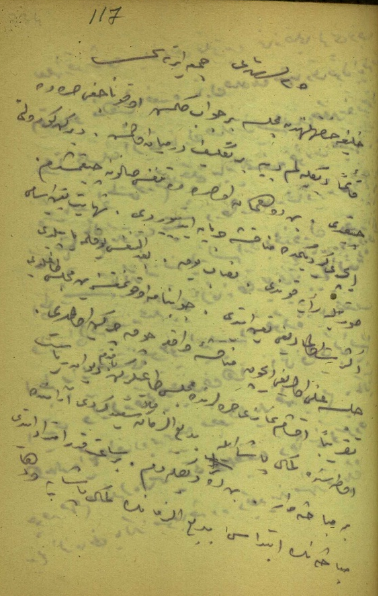
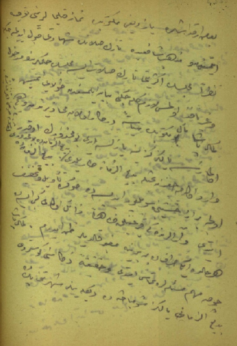
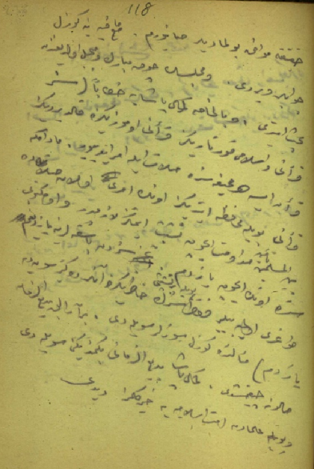

|
Bediüzzaman ve Mustafa Kemal'in Mecliste tartýþmasý |
  
|
|
Bediüzzaman ve Mustafa Kemal'in Mecliste tartýþmasý |
|
Bediüzzaman ve Mustafa Kemal'in Mecliste tartýþmasý

25 Teþrîn-i sânî 1338 Cum’a-ertesi (25 Kasým 1922)
Halife Hazretlerinden Meclis'e bir cevap gelmiþ. Okunacaðý sýrada kâimen dinleyelim diye bir teklif dermeyan olmuþ. Derken gürültü çýktý. Ben de hemen o sýrada teneffüs salonuna çýkmýþtým. Ýçeri girdiðimde münakaþa cereyan ediyordu. Nihayet ta'yîn-i esâmî suretiyle re'ye kondu. Nisâb yok. Ba'd-et-teneffüs yoklama yapýldý. Ekseriyet olmadýðý taayyün etti. Cevapname okunmaksýzýn meclis daðýldý. Celse, aleni olmadýðý için münakaþa-i vâkýa çok çirkin oldu...
Takrîben akþam namâzý sýralarýnda Meclis daðýlýrken baktým, Dîvân-ý Riyâset Odasýnda Kemâl Paþa ile Bedîüzzaman Molla Saîd-i Kürdî arasýnda bir mübâhase var. Ben de dinledim. Bir saat kadar imtidâd etti.

Mübâhasenin ibtidâsý; Bediüzzamân’ýn Kemâl Paþa’ya ve daha bazý arkadaþlara yazdýðý mektubda, namaz kýlmalarýný tavsiye etmesinden ve Mezheb-i Þâfiî’de, târik-i salâtýn þehâdeti kabul edilmeyeceðine nazaran Meclisin ekseriyeti târik-i salât ise, Meclis’in hükümlerinin medhûl ve gayr-i nâfiz olmasý lâzým geleceðini beyân etmesinden dolayý imiþ.
Kemal Paþa, meâl-i mektûbun siyâsete derkâr olan mahâzîrinden ve hiç olmazsa yalnýz kendisine yazýlsa idi bu mahzûrun o kadar vârid olmayacaðýndan bahisle Bediüzzaman’a darýldý. Bediüzzaman da bu mahzûru düþünemediðini itiraf etdi. Bediüzzamân da, evvelce biraz haþînce söylüyor idiyse de sonra te’vil ve tahfif etti. Ve aralarýndaki kýrgýnlýk zâhiren zâil oldu gibi ise de herhâlde iki taraf da birbirine muðber kaldýlar zan ederim.
Kemal Paþa, çok mühim meselelere temas etti ve hakîkaten zekâsýný gösterdi. Bedîüzzamân’ý, yalnýz þu mübâhasede dinleyenler, þöhretini pek de hakîkate muvâfýk bulmadýlar sanýyorum.

Maamâfih yine güzel cevaplar verdi. Ve Meclis’in çok mübârek ve mübeccel olduðundan bahs etdi. O, bilhassa Kemâl Paþa’ya hitâben; “Siz Kur’ân’ý ve Ýslâm’ý kurtardýnýz. Kur’ân’ý omuzunuza kaldýrdýnýz. Kur’ân ise, her sahîfesinde salât ile emr ediyor. Madem ki, Kur’ân’ý böyle muhafaza ettiniz, onun emri olan salâta da beynel-Müslimîn te'mîn-i müdâvemet için teþebbüs etmeniz lâzýmdýr. Ve o mektûbu size onun için yazdým. Sizden baþkalarýna yazdýðým doðru olmayabilir. Fakat, böyle bir teþebbüsü sizin hâtýrýnýza onlar da getirsin diye yazdým.” meâlinde güzel sözler söyledi.
Bir aralýk Bedîüzzaman, salona çýkmýþtý. Kemal Paþa, Bedîüzzaman’ý beðenmediðini söyledi. “Böyle ulemâdan Ümmet-i Ýslâmiyye’ye hayýr gelmez.” dedi... [Hâtýra Defteri; Ankara'da Millî Kütüphânede, 06 mil YZA 9487'de kayýtlýdýr.]